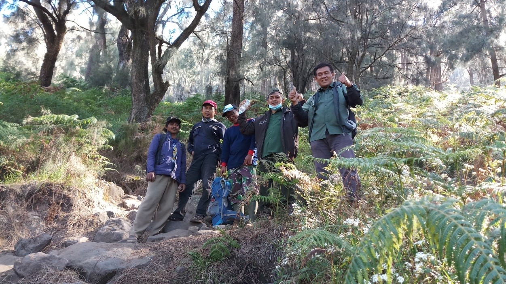
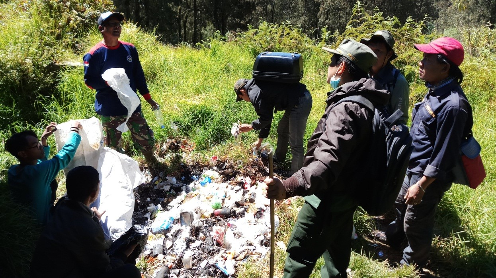
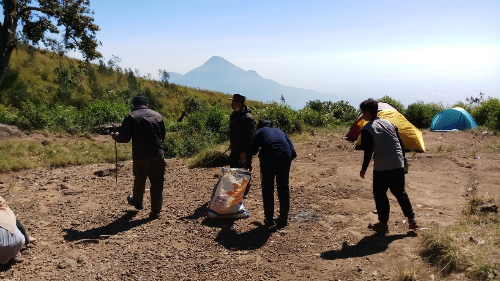
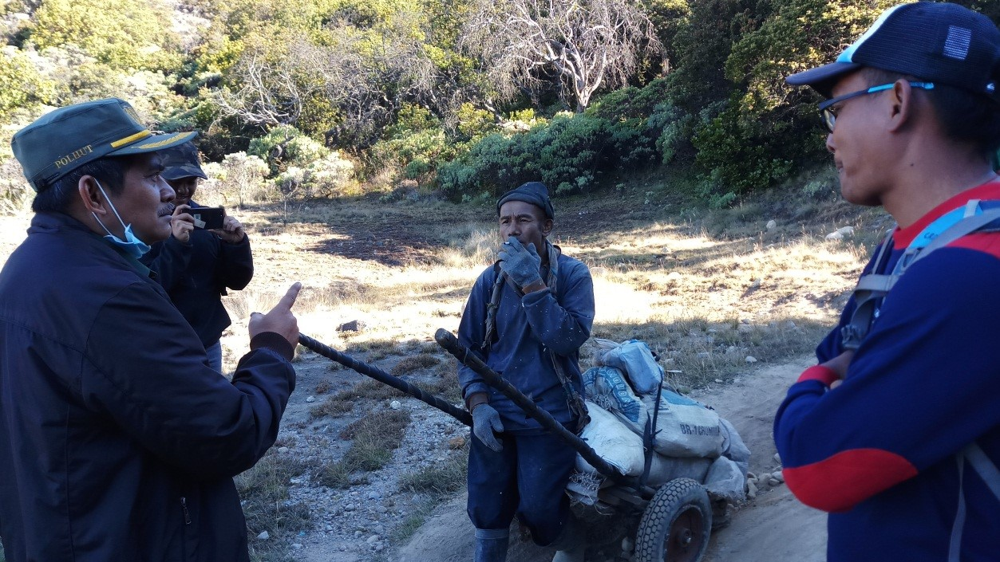
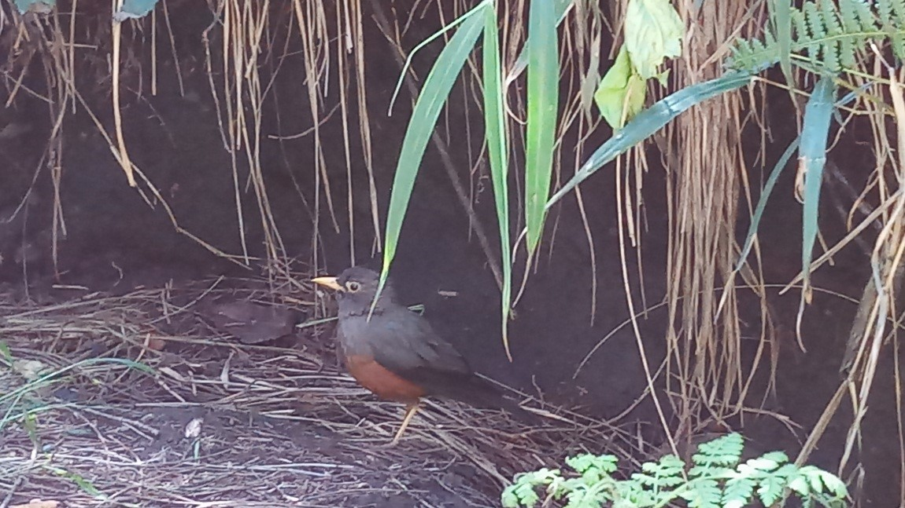

 Foto bersama beberapa anggota tim yang mendaki Gunung Welirang
Selasa 25 Juni 2019, dalam rangka kegiatan monitoring di area hutan gunung welirang, kami dari tim UPT Tahura R. Soerjo berangkat ke lokasi pada pagi hari sekitar pukul 6 pagi. Tim terdiri dari Asep Kusdinar beserta putranya, Hery Bantara, Lesmana, dan Gayuh. Perjalanan memakan waktu kurang lebih satu jam, dan kami tiba di lokasi pada pukul 7.15. Disana kami bersiap-siap dengan barang bawaan dan kendaraan yang akan dinaiki. Tim dan beberapa anggota lapang seperti Junaedi dan Riwayana yang mendampingi perjalanan di area Gunung Welirang menggunakan jip untuk melintasi pos pet bocor, pos kokopan, dan terakhir pos pondokan.
Perjalanan kami di Gunung Welirang tidak hanya menjalankan kegiatan monitoring saja. Ada misi khusus yang kami jalankan selama perjalanan di Gunung Welirang. Misi tersebut adalah membersihkan sampah di area hutan demi kelestarian alam. Misi ini dijalankan karena banyaknya wisatawan atau pendaki yang sering membuang sampah sembarangan. Sehingga terlihat sampah berserakan di setiap pos. Pemandangan kurang menyenangkan dan wisata kurang nyaman jika banyak sampah yang mengganggu. Oleh karena itu kami tim dari UPT Tahura mengajak seluruh masyarakat khususnya wisatawan dan pendaki pada saat itu untuk selalu membawa turun sampah dan tidak membuang sampah sembarangan pada area wisata Gunung Welirang.
 Foto kegiatan membersihkan/mengambil sampah di Pos Pondokan
Singkat cerita, kami dari tim turun pertama kali dari jip di pos kokopan. Di pos tersebut terlihat banyak sekali sampah, baik sampah plastik atau sampah sisa makanan. Tim Tahura dan para pendaki yang ada disana pada saat itu langsung bergerak mengambil sampah di pos kokopan. Asep Kusdinar sebagai pimpinan pada kegiatan ini menyerukan pada para pendaki supaya selalu menjaga lingkungan alam, khususnya Gunung Welirang. Kemasan plastik atau sampah yang lain diharapkan tidak dibuang sembarangan dan bila tidak menemui tempat sampah harus dibawa sampai pos awal.
Setelah di pos kokopan kami tim melanjutkan ke pos selanjutnya, yaitu pos pondokan. Di pos ini ternyata terlihat lebih banyak lagi sampah yang dibuang sembarangan. Para pendaki yang sedang berada di pos pondokan segera digerakkan untuk membersihkan sampah. Tim juga menghimbau pada pedagang makanan yang ada di pos tersebut untuk turut peduli pada lingkungan. Karena warung dagang tersebut secara tidak langsung juga memberikan kontribusi sampah pada area Gunung Welirang.
 Foto kegiatan membersihkan/mengambil sampah di Pos Pondokan
Kegiatan membersihkan sampah sudah usai, jam menunjukkan pukul 12.30 siang. Tim melaksakan sholat dahulu sebelum melanjutkan perjalanan pendakian menuju puncak Gunung Welirang. Tepat pukul 1 siang kami berangkat menuju puncak. Perjalanan diperkirakan memakan waktu tiga sampai empat jam untuk mencapai puncak. Jalan yang kami lalui tidak normal, berbatu, berdebu, sampai dengan kemiringan yang sangat curam.
Perjalanan menuju puncak welirang memang tidak mudah, namun kami diberikan pemandangan alam yang menyegarkan. Tumbuhan-tumbuhan yang hijau, dan ada pula satwa burung yang kebetulan melintas. Pohon yang banyak kami temui saat perjalanan adalah cemara gunung, dan yang lainnya adalah semak belukar berupa tumbuhan paku. Sedangkan satwa yang kami temui adalah burung jalak. Terlihat sering sekali selama perjalanan hingga sampai puncak.
Kita tahu, bahwa dari nama gunungnya yaitu Gunung Welirang. Welirang adalah Belerang dalam bahasa jawa. Oleh karena itu dari pos pondokan ketika berjalan menuju puncak pasti banyak menemui buruh angkut yang mengangkut belerang dari kawah. Pertemuan dengan buruh angkut ini menambah pengetahuan dari segi sosial dalam perjalanan menuju puncak. Kami dari tim seperti heran melihat buruh angkut tersebut. Karena mereka sangat kuat, mereka membawa hasil tambang dengan beban 1 sampai 3 kuintal dengan cara ada yang dipikul, dan ada yang menggunakan gerobak. Padahal jalanan menyusuri gunung dan tidak semulus aspal di jalan raya, tapi mereka bisa melakukannya dengan terus menerus hingga bertahun-tahun.
 Foto Perbincangan Anggota tim dengan salah satu Buruh Angkut Tambang Belerang
Kami dari tim mewawancarai salah satu buruh angkut disana. Beliau berumur kurang lebih 50 tahun. Saat itu beliau sedang mengangkut belerang dari kawah menuju pos pondokan yang kami temui di jalan. Beliau mengatakan bahwa pekerjaannya tersebut dilakukan dari hari senin sampai kamis. Upah yang mereka dapatkan sekali angkut adalah 160 ribu untuk satu gerobak yang memiliki beban sekitar 3 kuintal.
Salah satu informasi menarik yang bisa kita ambil adalah bahwa semua pekerja baik buruh angkut dan buruh tambang, tidak menginginkan anaknya nanti meneruskan pekerjaannya tersebut. Sejenak terbesit dalam pikiran, lalu siapakah nanti yang akan meneruskan potensi tambang di Gunung Welirang? Padahal belerang disana masih sangat potensial. Fenomena ini mirip dengan masyarakat petani. Dewasa ini pekerjaan menjadi seorang petani dipandang sebelah mata oleh anak muda. Dahulunya yang orang tuanya sebagai petani, kini anaknya tidak mau meneruskan pekerjaan tersebut. Alhasil petani-petani semakin sedikit jumlahnya, dan lahan-lahan pertanian sedikit demi sedikit berubah menjadi fungsi yang lain.
Sepanjang perjalanan menuju puncak welirang banyak hal menarik yang bisa dicatat. Ketika sedang menuju sumber mata air, kami menemukan seekor burung cantik yang datang mendekati kami. Rasanya seakan-akan igin menangkapnya. Karena satwa yang ada di kawasan Tahura dijaga, maka cukup ditangkap dengan kamera saja. Burung tersebut memiliki paruh yang lancip dan tidak besar, ukuran badanya sedang, warna bulunya dominan hitam, dan di bagian dada burung bulunya berwarnya merah. Setelah kami amati burung ini adalah burung Anis Gunung (Turdus poliocphalus). Ternyata burung ini tidak sedikit jumlahnya, di titik lain kami juga menemukan burung yang serupa.
 Foto Burung Anis Gunung yang tertangkap kamera di dekat Sumber Mata Air Pos Pondokan
Ada satu lagi yang menarik untuk diceritakan dari hasil perjalanan kami menuju Gunung Welirang, yaitu sisi dunia lain yang diceritakan masyarakat setempat. Beberapa titik di sepanjang perjalanan menurut masyarakat, alangkah baiknya kita berjalan lebih sopan, atau memberikan sedikit kode seperti membunyikan klakson. Hal ini dipercaya masyarakat setempat untuk menghindari hal-hal yang tidak kita inginkan. Contohnya seperti saat melewati jurang dowo, disana jalannya curam dan lumayang panjang, klakson harus dibunyikan. Begitu juga di titik macan mati, sampai dengan pos pondokan. Cerita menarik disajikan di pos pondokan. Menurut sejarah, disana adalah bekas tempat tambatan kuda-kuda milik orang belanda. Sehingga isu atau mitos yang diangkat oleh masyarakat supaya pendaki lebih sopan dan bijak berperilaku, adalah adanya kuda berkepala manusia yang selalu menjaga disana. Sungguh cara dengan penuh kearifan lokal mewarnai cerita perkalanan sampai ke puncak welirang.
Itulah cerita singkat kami selama perjalanan menuju puncak welirang. Bukan seberapa capek atau seberapa tinggi gunung yang yang kita lalui. Namun bagaimana menumbuhkan kesadaran kita akan lingkungan dan masyarakat. kesadaran lingkungan dimulai dari tidak membuang sampah sembarangan. Sampah berserakan seperti sampah plastik yang tidak mudah terurai akan merusak kelestarian alam. Satwa liar atau tumbuhan yang ditemui, jika diambil secara ilegal juga akan semakin merusak lingkungan. Oleh karena itu, mari kita jaga hutan kita bersama supaya manfaat yang didapat dari hutan juga bisa kita rasakan bersama-sama.